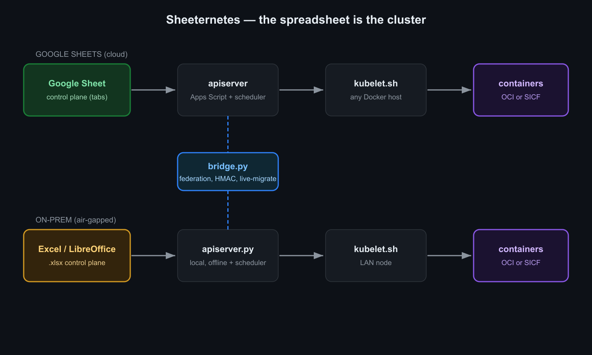
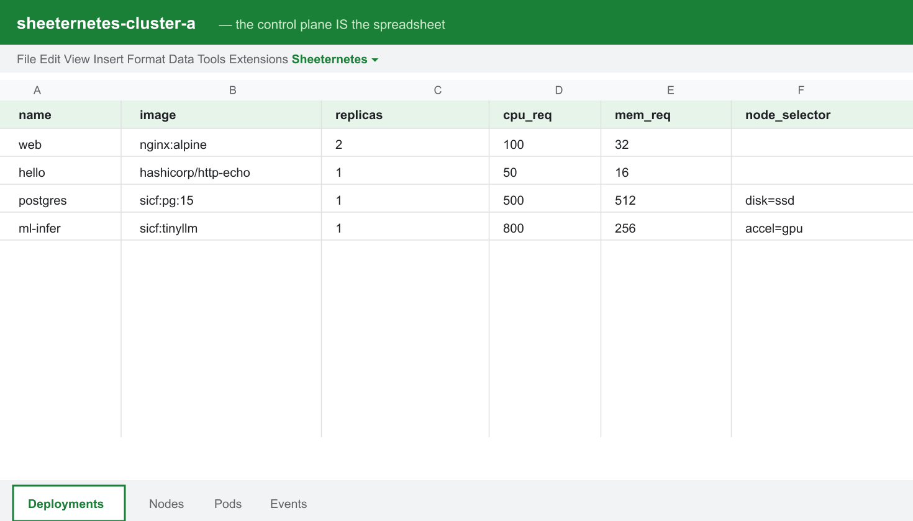
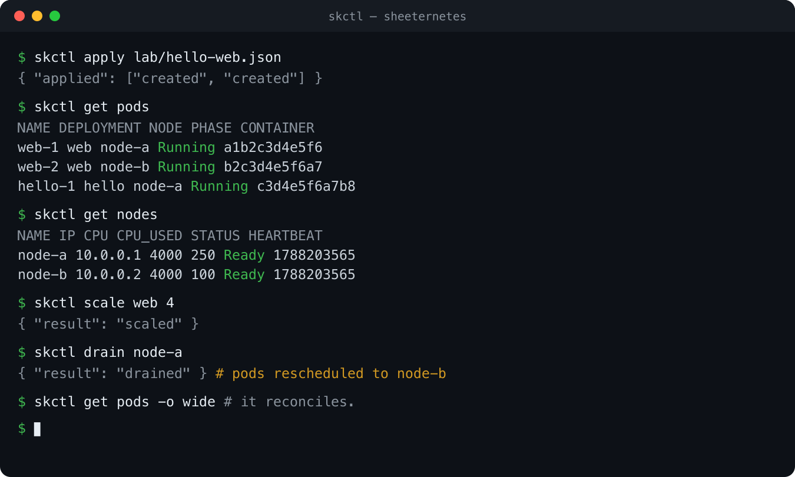
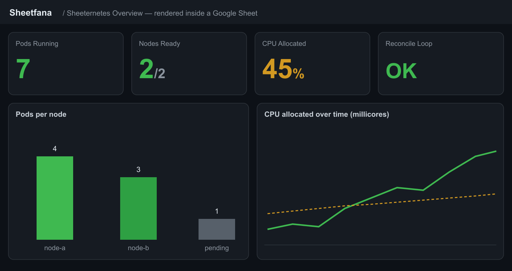
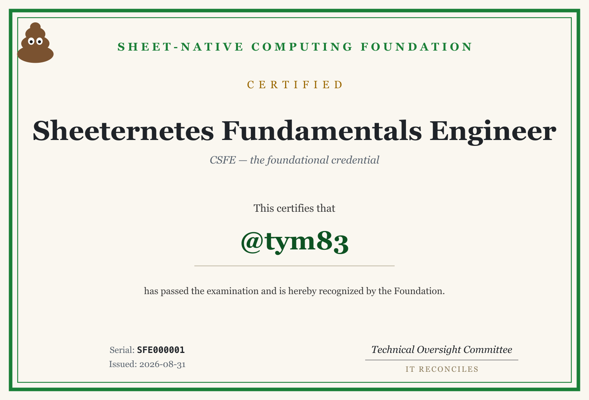
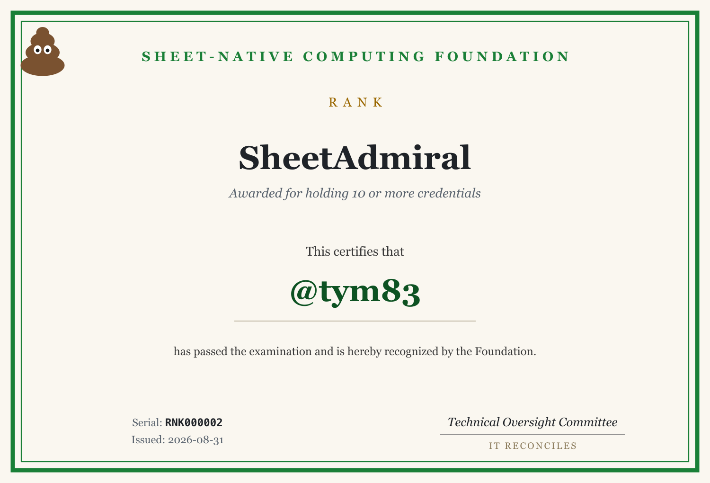

Some projects start as a bad idea you can't shake. Mine was: what if the only rule was "keep everything inside a spreadsheet"?
Not "export metadata to a CSV." Not "log to Sheets." I mean the whole
control plane. Deployments, Nodes, Pods, Events. They're tabs. A
scheduler reads and writes cells. A kubectl-style CLI talks
to the sheet. And on the other end, real Docker containers actually
start.
The spreadsheet doesn't pretend to be a cluster. It is the cluster.
I called it Sheeternetes. It's a joke. It also compiles, has tests, and survives a node dying. Let me show you how it works, how to run it in five minutes, how it goes air-gapped on a desktop Excel file, and the part I'm weirdly proud of: you can store a whole container image inside the cells and even boot DOOM from there.
First, the obligatory disclaimer
Don't run production on this. If you do, film the save dialog.
Everything below is real code though. The scheduler does bin-packing and failover. There's HMAC request signing, make-before-break live migration, and a container image format that lives in cells. The substrate is cursed. The engineering isn't.
The idea in one picture
Kubernetes, squinting: desired state in etcd, controllers that drag reality toward it. Swap etcd for a Sheets tab and the controller for a reconcile loop, and you've got Sheeternetes.

- The sheet is the store and the source of truth.
Four tabs:
Deployments,Nodes,Pods,Events. - The apiserver serves the data and runs the
scheduler. In the cloud that's Google Apps Script bound to the sheet.
On-prem it's a small Python server over an
.xlsx. - The kubelet is a bash script. It turns any Docker host into a node: sends a heartbeat, gets the pods it should run, and makes local Docker match.
- skctl is a tiny kubectl. Just
curlandjq.
The contract is small enough to fit in a tweet:
GET ?token=T&kind=pods|nodes|deployments|events -> { "items": [...] }
POST { token, action: "apply"|"scale"|"delete", ... }
POST { token, node, pods:[...] } # kubelet heartbeat -> desired podsFive minutes to a cluster
Cloud version, on Google Sheets. You need a Google account, a Docker
host, and bash curl jq. All the code is in github.com/sncfoundation/sheeternetes.
There's no template to copy, on purpose. A blank sheet turns itself into a cluster:
- Create a blank Google Sheet.
- Extensions, then Apps Script, and paste in
Code.gs. - Set a
TOKENat the top. - Run
setup()once. It builds the four tabs, seeds a couple of sample workloads, and starts a one-minute reconcile trigger. - Deploy as a Web app and copy the
/execURL.
Now bring up a node on any Docker box:
export WEBAPP_URL=https://script.google.com/macros/s/XXXX/exec
export TOKEN=secret
NODE_NAME=node-a CPU_TOTAL=4000 MEM_TOTAL=8192 ./kubelet.shNo spare machines? ./local-cluster.sh fakes three nodes
on one Docker daemon.
Deploy something. The manifest is plain JSON:
{ "deployments": [
{ "name": "web", "image": "nginx:alpine", "replicas": 2, "cpu_req": 100, "mem_req": 32 },
{ "name": "hello", "image": "hashicorp/http-echo", "replicas": 1, "cpu_req": 50, "mem_req": 16,
"command": "-text=hello-from-a-spreadsheet -listen=:8080" }
]}skctl apply lab/hello-web.json
skctl get podsHere's the moment that got me. You open the sheet and your cluster is
right there as rows. Change replicas in a cell and
the next reconcile spins up the pods. It's kubectl edit,
except the editor is your cursor.

And in the terminal it looks suspiciously grown-up:

The containers are real. docker ps on the node proves
it. Sheetlium (our Cilium) drops them on a shared Docker network and
gives each deployment a DNS alias, which is basically a Service.
The scheduler is not a toy
The usual reaction is "it's just a list." It isn't. On every heartbeat the apiserver actually places replicas, and it's a pure function with unit tests behind it:
- Bin-packing by
cpu_reqandmem_req. Fits nowhere, gets markedUnschedulable. - Sticky placement, so pods don't wander between nodes for no reason.
- Failover. A node stops sending heartbeats, goes
NotReady, and its pods land on the survivors. - cordon, drain, migrate, the kubectl way.
- Affinity and taints/tolerations, so GPU jobs go to GPU nodes.
skctl drain node-a # pods evacuate to other nodes
skctl taint node-a gpu=true:NoScheduleWatching pods hop off a dying node, in a spreadsheet, live, is a genuinely good time.
SheetOS, because the node needs an OS
If you have an orchestrator, you want a node OS to go with it.
SheetOS is our Talos: minimal, immutable, declaratively
configured, and self-bootstrapping. sheetstrap reads the
node's desired image from a sheet, brings up the runtime, registers as a
Node, and if you ask nicely, installs a Sheeternetes cluster on top of
itself.
Yes, that's a spreadsheet OS bootstrapping a spreadsheet cluster. Try not to think about it too hard.
Bare metal: no cloud, no internet
The cloud version is fun, but the real flex is running this
air-gapped on a desktop file. That's the
sheeternetes-onprem edition. The apiserver is a local
Python process over an .xlsx, same contract as the cloud,
so kubelet.sh and skctl point at it
unchanged.
pip install openpyxl
cp .skctl.env.example .skctl.env
make up # apiserver over cluster.xlsx
make node # this host becomes a node
make apply # deploy the demo
make pods # watch it scheduleIt bin-packs and fails over between LAN nodes, on a
.xlsx. About Excel vs LibreOffice: openpyxl reads
.xlsx, so in LibreOffice Calc just Save As
.xlsx. Native .ods is on the list. And this
edition ships with 52 tests and CI, because a joke with no tests is just
a liability.
Wiring sheets together
One cluster is boring. The good part is federating several, including different kinds: a local Excel cluster talking to a cloud Google Sheets cluster.
On-prem boxes can't be reached from outside, so the bridge dials out. It reads the local apiserver and reconciles against a peer, giving you cross-substrate service discovery. Then the fun one, live migration, make-before-break:
python3 bridge.py migrate web --from local --to peer --rollback-window 30 \
--local http://localhost:8787 --local-token secret \
--peer https://script.google.com/macros/s/XXXX/exec --peer-token secret2Copy the spec to the target, wait until it's actually up, then drain
the source. If the target never comes up, the source is left alone, so
there's no downtime. Add --rollback-window and it watches
the target after cutover and rolls back if it degrades.
There's also two-way sync as a daemon, and optional HMAC
signing on requests (timestamp plus signature, checked within a TTL) for
when your peer is exposed across substrates. We have HMAC on
spreadsheets now. I'm not sure how to feel about it either.
Two kinds of containers, and yes, DOOM
This is my favorite part. Sheeternetes runs containers two ways, and they're interchangeable.
OCI mode. Put image: nginx:alpine in
the manifest and the node pulls it from a normal registry. Full
compatibility with the entire container world, working today. The sheet
just holds desired state; the bytes come from Docker Hub.
SICF native mode. Put
image: sicf:web:v1 and the image is resolved from
inside the workbook. Layers are stored as base64, split across
cells, addressed by sha256. No registry. The kubelet pulls the layers
out of the sheet, checks every digest, and runs it.
There's a lossless bridge between the two:
sheetbuild import nginx:alpine # OCI image -> rows in the sheet
sheetbuild export web:v1 ... # rows -> OCI imageSame digests round-trip, so import then export gets you back exactly what you started with.
Which brings us to the question every infra project must answer. Can it run DOOM? It can, and the whole game lives in the cells. Shareware DOOM plus a tiny web front-end is a few hundred base64 cells, nowhere near the 10M-cell limit. The demo that makes people blink:
docker build -t doom:shareware . && docker save doom:shareware -o doom.tar
sheetbuild import doom.tar --name doom:shareware --store cluster.xlsx
docker rmi doom:shareware # gone locally. it only exists in the spreadsheet now.
skctl apply doom.json # image: sicf:doom:shareware
skctl get pods # doom-1 RunningThe kubelet saw sicf:, fetched the layers from the
sheet, verified the hashes, docker loaded the image back
into existence, and ran it. The game came out of a spreadsheet. Code is
at github.com/sncfoundation/sheetdoom.
One honest note: the game still runs on the node's real CPU. The sheet stores the image and schedules the pod. It's the coordinator, never the executor.
Dashboards, in cells
Of course there are dashboards. Sheetheus scrapes metrics into a tab, Sheetfana renders them with conditional formatting and sparklines, in the sheet.

Pods running, nodes ready, CPU allocated, a bar chart, a time series. All cells.
It grew a foundation
At some point there were enough projects that they asked for a foundation. So there's the Sheet-Native Computing Foundation, a straight-faced parody of the CNCF that happens to work.
There's a real standard, the Sheet Container Initiative, modeled on the OCI: SCRI for the runtime interface and SICF for images, both written from shipping code, with a conformance suite. Where you have two implementations, you should have a spec, and we had two.
There's verifiable certification. You open an issue, a GitHub Action
mints a serial like SFE000001 into a public registry, and
you collect credentials toward ranks: SheetCadet, SheetAstronaut,
SheetCommander, SheetAdmiral.


And it's genuinely open. A community contributor recently built SheetHub, our GitLab-on-a-spreadsheet, from scratch: apiserver, web UI, CLI, tests. It went through a real review, picked up a couple of security findings, got fixed in hours, and shipped. That's the whole point.
Come build weird things
The community is international and English-speaking, so join from anywhere.
The actual point
None of this belongs in production. But building a working cloud-native stack on a ridiculous substrate turned out to be a great way to explain the real thing. People finally see reconcile happen. They get why make-before-break matters, what a digest is for, why a control plane is separate from execution. Sometimes the fastest way to teach a serious idea is to build it somewhere silly.
It reconciles.